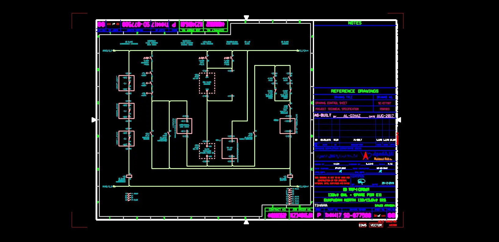
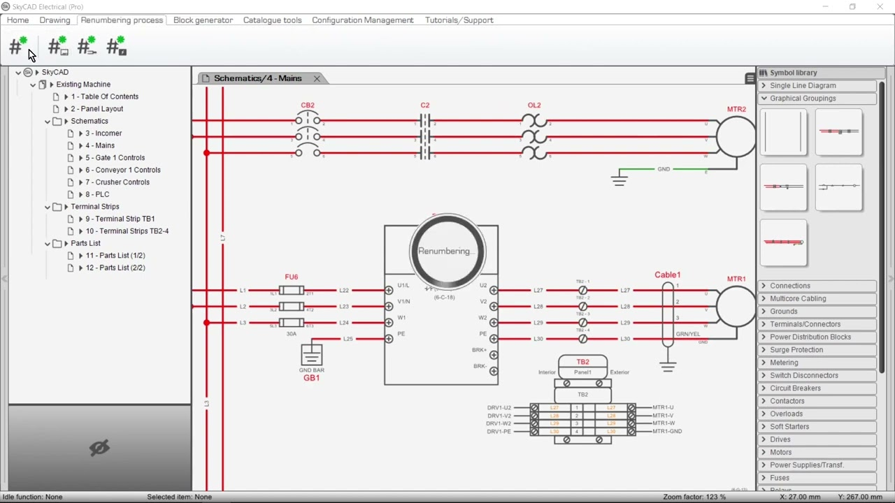
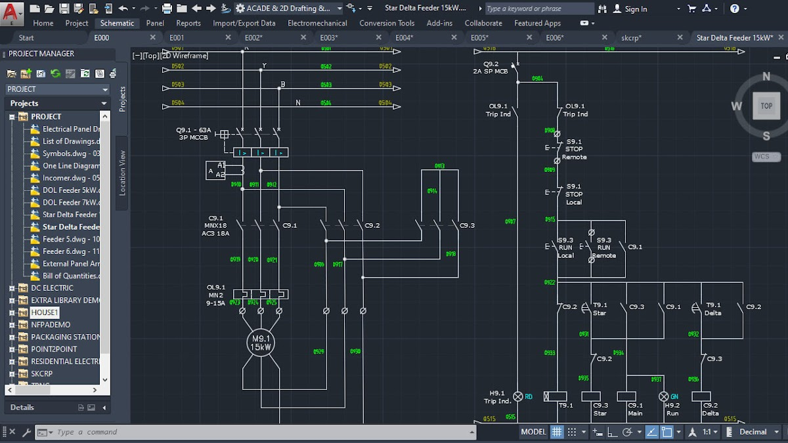
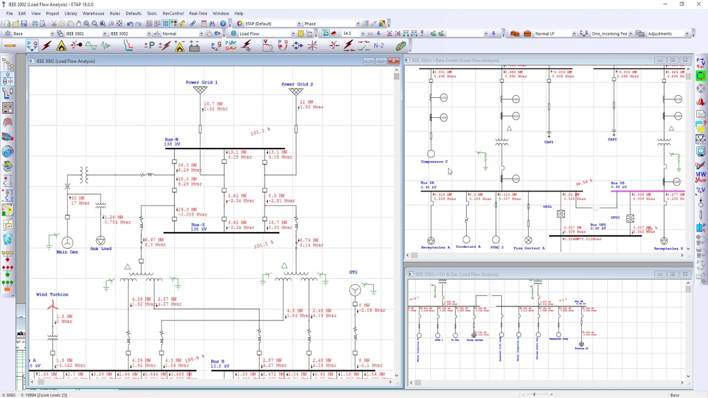

Electrical design & drafting for industrial projects.
Single-line diagrams, MCC and panel schedules, cable schedules and control schematics. Produced in your templates and coordinated around the standards, interfaces and issue requirements of your project.
The drawings have to agree with each other.
The single-line diagram, load list, MCC schedule and cable schedule describe the same electrical system. When a feeder changes, the references need to follow it through the package. We develop and draft those documents from your design basis, load data and mark-ups, in your title blocks and symbol libraries.
At scoping, we establish the drawing register, applicable project standard, source information and review owner. Equipment tags, circuit references and revision status are part of the checking brief. Calculations, arc-flash studies and statutory review are identified as separate responsibilities where the package needs them.
Preparing a new package? The drawing brief guide sets out the inputs worth collecting first.
- Industrial electrical documentation specialists
- Jurisdiction-specific code verification
- Your templates, your title blocks, your standards
- Scope and deliverables agreed before production

Every electrical drawing your project needs

Single-Line Diagrams
Complete SLD packages from utility source through distribution to load — with fault levels, protection ratings, and cable specifications.

Panel & MCC Schedules
Panel schedules, MCC bucket layouts, load calculations, and balanced distribution planning for industrial and commercial facilities.

Cable Schedules & Routing
Comprehensive cable schedules, tray routing, segregation plans, and conduit schedules for complex facilities.

Arc Flash & Protection Studies
IEEE 1584 arc flash analysis, protection coordination, and short-circuit studies in ETAP or SKM Power Tools.

Control System Documentation
Control panel layouts, schematic diagrams, I/O schedules, and PLC documentation for manufacturing and process industries.
As-Built & Red-Line Updates
Convert field red-lines into clean, production-ready as-built documentation — with version control and delta reports.
Working in the tools your project runs on.
We work inside your tooling, your standards, and your template libraries — not ours.
Microstation CONNECT Edition
Large-scale infrastructure and mining's platform of choice. Our Microstation expertise includes:
- Complete electrical system layouts with precise detailing
- Seamless integration with existing client Microstation libraries
- Custom cell libraries for specialized mining and industrial components
- Strict compliance with Bentley standards and client conventions

SkyCAD
Utility and distribution systems with GIS integration:
- Overhead and underground utility design
- Distribution network documentation
- Client symbol libraries and templates
- GIS integration for geospatial accuracy

AutoCAD Electrical
Industry-standard electrical drafting:
- Schematic designs and system layouts
- Panel layout drawings with component specs
- Cable schedules and routing plans
- Custom block libraries to your standards

ETAP Power Systems
Power system analysis and documentation:
- Power system modeling and comprehensive analysis
- Protection coordination studies
- Arc flash studies to NFPA 70E / IEEE 1584
- Load flow and short-circuit analysis

Revit MEP & 3D Conversion
BIM-integrated electrical systems and 2D to 3D conversion:
- Transformation of legacy 2D into 3D Revit models
- 3D electrical modeling with Navisworks clash detection
- Parametric electrical families to your content standards
- Digital twin creation for facility management

EPLAN + Additional Platforms
Our versatility extends to:
- EPLAN for control systems documentation
- Solidworks Electrical for machinery and equipment
- SKM Power Tools for power system analysis
- Additional platforms on request

A drawing is only useful
when the details agree.
Plant work crosses teams, tools and revisions. The documentation needs to carry the same design intent all the way through.
Connected references
Keep equipment tags, circuit references and cable schedules consistent across the package.
Clear review points
Agree the design inputs and review responsibilities before the package moves toward issue.
Traceable revisions
Make the current issue and the changes from the previous one easy for your team to identify.
From your brief to a checked drawing package
Discovery
30-min scoping call with a senior engineer. We review drawings, standards, and deadlines.
Agree the Design Basis
Confirm the source information, templates, review requirements and issue sequence before production begins.
Production
Dedicated team produces to your standards. Multi-stage QA against applicable code.
Handover
Source files, PDFs, and revision log delivered. Knowledge transfer included.
Start with a defined scope.
Agree the source information, deliverables and review requirements before the first issue.
Your team. Our team.
A clear way to work.
Agree the standards, review responsibilities and working arrangements before the first issue.
Quality: who checks the drawings?
The checking brief covers the project standard, drawing references and review responsibilities. We agree the internal checks, client review sequence, revision allowance and response windows as part of the package scope.
Standards: will you draw to our codes and templates?
We work to the standard that applies to your project: NEC (US), IEC 60364 and IEC 61439, AS/NZS 3000 (Australia and New Zealand), CSA C22.1 (Canada) and BS 7671 (UK). We draw inside your title blocks, layer conventions, cell and block libraries, not ours.
IP and NDA: what happens to our files?
Confidentiality and file access are agreed before source material is shared. Tell us if you require an NDA or a client-managed workspace, VDI or VPN. The scope identifies the permitted environment, access arrangements and handover requirements.
Stamps: who signs the drawings?
If your package requires a PE, Chartered Engineer or other statutory sign-off, tell us during scoping. We agree the responsible party and review requirements before production starts.
Time zones: when can we talk to the team?
Our production team is based in Pakistan (PKT, UTC+5). We agree your project’s working hours and handover arrangements during scoping. The table below uses a 09:00–18:00 PKT reference window to help plan the overlap; it is not a committed project schedule.
| Your time zone | Reference window, your clock | Overlap with your 09:00–17:00 |
|---|---|---|
| Perth — AWST (UTC+8) | 12:00–21:00 | 5 h (12:00–17:00) |
| Brisbane, Sydney — AEST (UTC+10) | 14:00–23:00 | 3 h (14:00–17:00) |
| Dubai — GST (UTC+4) | 08:00–17:00 | 8 h (09:00–17:00) |
| London — GMT (UTC+0) | 04:00–13:00 | 4 h (09:00–13:00) |
| New York — ET (EST, UTC−5) | 23:00–08:00 (overnight) | None — overnight handover |
| Los Angeles — PT (PST, UTC−8) | 20:00–05:00 (overnight) | None — overnight handover |
Daylight saving: Sydney, Melbourne, Canberra and Hobart move to AEDT (UTC+11) from October to April, cutting the overlap to 2 h (15:00–17:00); Queensland and Western Australia stay on standard time. UK summer time (BST, UTC+1) widens the London overlap to 5 h (09:00–14:00). US daylight time moves our day to 00:00–09:00 EDT and 21:00–06:00 PDT, so US teams can plan an overnight handover; the actual arrangement is agreed for your project.
Questions electrical managers ask us
Which inputs do you need for an industrial electrical package?
Are arc-flash and protection studies included?
Can the drawing set use our existing tags and libraries?
How are review comments and revisions handled?
Bring your next industrial package into focus.
Share the drawing types, site standards and target issue date. We’ll work through the scope and agree the production plan with you.